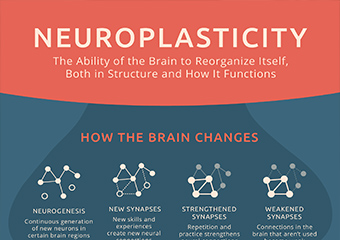
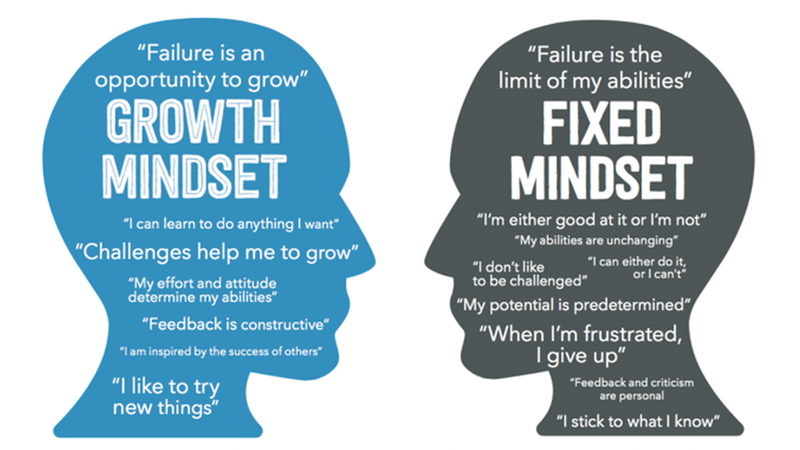

"Neuroplasticity, also known as neural plasticity, or brain plasticity, is the ability of neural networks in the brain to change through growth and reorganization. These changes range from individual neuron pathways making new connections, to systematic adjustments like cortical remapping. Examples of neuroplasticity include circuit and network changes that result from learning a new ability, environmental influences, practice, and psychological stress"
Understanding neuroplasticity changes people’s mindset about their capabilities. When people learn that studying and doing things over and over again molds their brain and that their natural talents and abilities don’t define their potential to do more, people start to perform better. Knowing that I don’t necessarily need the natural talent or ability to do something in order for me to give it a go or learn to be good at it, gives me more confidence that I can do anything. I can be just as good as anyone who has the natural talent if I put the work and effort in. Read more. Practice more. Do something over and over again for an extended period of time.
“In a growth mindset, people believe that their most basic abilities can be developed through dedication and hard work—brains and talent are just the starting point. This view creates a love of learning and a resilience that is essential for great accomplishment.” (Dweck, 2015)
Having a growth mindset helps people achieve their goals and not put themselves in a box. Having a growth mindset helps people overlook their weaknesses and failures and looks at them as opportunities to learn and grow instead of obstacles or hindrances. I’ve always thought people are good at certain things and aren’t good at certain things. I thought people are born to do certain things but learning about neuroplasticity and growth mindset made me realise that although some people are naturally gifted at certain things, our brain is capable of learning to be good at something. With consistent effort, the brain can be molded and taught. I’m relatively new to the coding industry and before I decided to join the bootcamp I was always scared that I’ll fall behind in class. So I am currently trying to learn as much of the basic stuff as I can before the bootcamp starts. But I’ve always thought if this is going to work or not, will this get me ready for the bootcamp or are my efforts moot? But now, I’m a lot more confident that my lack of previous experience and knowledge doesn’t necessarily have to be in the way of my learning as long as I put in a lot of effort into it.